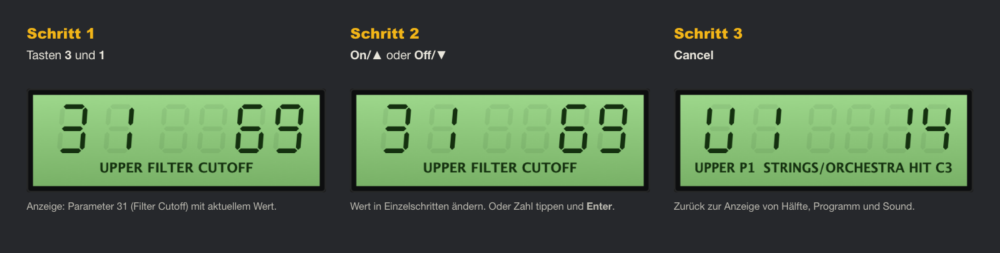

1. Überblick
MIRACLE DSP ist ein Sample-Player mit dem Charakter eines 8-Bit-Samplers der 1980er-Jahre: niedrige Sample-Rate mit Aliasing, 8-Bit-Auflösung und ein resonanzfähiges 4-Pol-Tiefpassfilter. Die Oberfläche folgt dem klassischen Hardware-Aufbau: Keypad, grünes Display, Disk-Fach, Laufwerk, Pitch- und Mod-Rad.
- Formate: VST3, Audio Unit (AU) und eigenständige App (Standalone)
- System: macOS 11 oder neuer, Apple Silicon und Intel
- Zwei Keyboard-Hälften (LOWER/UPPER), jede mit eigenem Sample-Ordner
- Bis zu 16 Stimmen, 2 Oszillatoren pro Stimme

2. Installation
- Doppelklick auf MIRACLE DSP Installer.pkg.
- Falls macOS meldet, dass das Paket von einem nicht verifizierten Entwickler stammt: Rechtsklick auf die Datei → Öffnen → Öffnen. Alternativ unter Systemeinstellungen → Datenschutz & Sicherheit auf Trotzdem öffnen klicken.
- Den Schritten des Installers folgen und mit deinem Mac-Passwort bestätigen.
- DAW (Logic, Ableton, Cubase …) neu starten. Gegebenenfalls einen Plugin-Rescan auslösen.
| Komponente | Ort |
|---|---|
| Audio Unit | /Library/Audio/Plug-Ins/Components/MIRACLE DSP.component |
| VST3 | /Library/Audio/Plug-Ins/VST3/MIRACLE DSP.vst3 |
| Standalone-App | /Programme/MIRACLE DSP.app |
In Logic findest du das Plugin unter Instrument → AU Instruments → ESS76 → MIRACLE DSP.
3. Erste Schritte
- Plugin auf eine Instrumentenspur laden. Ohne Samples spielt eine eingebaute Wellenform („INIT WAVE“), damit du sofort etwas hörst.
- Rechts im Keypad unter LOAD die weiße Taste Upper drücken und einen Ordner oder eine einzelne WAV-Datei wählen. Du kannst beides auch einfach aufs Plugin ziehen.
- Mit Snd ▲ und Snd ▼ durch die Sounds blättern, oder im Disk-Fach links einen Sound anklicken.
- Für die linke Tastaturhälfte dasselbe mit Lower wiederholen.
- Alle Regler öffnest du mit der Taste EDIT PANEL oben rechts.
4. Die Oberfläche

| Nr. | Element | Funktion |
|---|---|---|
| 1 | Disk-Fach | Oben je eine Zeile für UPPER und LOWER mit Sound, Position und Oktave. Darunter die Liste aller Sounds der aktiven Hälfte. |
| 2 | Laufwerk | Zeigt den Namen des geladenen Ordners der aktiven Hälfte. |
| 3 | PITCH / MOD/MIX | Pitch-Rad federt in die Mitte zurück. Das Mod-Rad erhöht die LFO-Tiefe (Vibrato). Beide drehen sich mit, wenn du die Räder am MIDI-Keyboard bewegst. |
| 4 | VOLUME | Gesamtlautstärke. |
| 5 | Display | Links Parameternummer, rechts Wert. Im Ruhezustand: aktive Hälfte und Programm (z. B. U1), Sound-Nummer und Name. |
| 6 | CONTROL | Param, Value, Off/▼, On/▲ (siehe Kapitel 6). |
| 7 | SELECT | Zifferntasten, Cancel, 0/Prog, Enter. |
| 8 | SOUND | Snd ▲/▼ blättert durch die Sounds, Oct ▲/▼ transponiert die aktive Hälfte in Oktaven (−3 bis +3). |
| 9 | HALF | Wählt die Hälfte, die du bearbeitest. Die aktive Taste leuchtet. |
| 10 | LOAD | Öffnet die Auswahl für UPPER oder LOWER: Ordner oder einzelne Audiodatei. |
| 11 | EDIT PANEL | Klappt das Bearbeitungsfeld mit allen Reglern auf und zu. |
| 12 | Tastatur | 61 Tasten (C1–C6) zum Anspielen mit der Maus. |
5. Sounds laden und auswählen

- Laden: Taste Upper oder Lower unter LOAD, dann einen Ordner oder eine Datei wählen. Unterordner werden mit durchsucht. Wählst du eine einzelne Datei, lädt das Plugin ihren ganzen Ordner und stellt diese Datei ein, damit du weiterblättern kannst.
- Drag & Drop: Ordner oder Datei aufs Plugin ziehen. Über einer Zeile UPP/LOW landet sie in dieser Hälfte, sonst in der aktiven Hälfte.
- Formate: WAV (8/16/24/32 Bit, Float, auch komprimiert wie µ-law, A-law und ADPCM, Endung auch groß geschrieben), AIFF, FLAC, OGG, MP3. Bis zu 5000 Dateien.
- Blättern: Snd ▲ / ▼ (Taste halten für schnelles Blättern). Am Ende springt die Auswahl wieder an den Anfang.
- Mausrad: über einer der Zeilen UPP/LOW blättert in dieser Hälfte.
- Liste: Klick wählt einen Sound. Nach einem Klick in die Liste funktionieren auch ↑ ↓.
- Aktive Hälfte wechseln: eine der Zeilen UPP/LOW anklicken oder Taste unter HALF.
Tonhöhe der Samples
Jeder Sound liegt auf der ganzen Hälfte. Seinen Grundton erkennt das Plugin automatisch:
- aus den Metadaten der Datei (z. B. WAV mit hinterlegtem Grundton), sonst
- aus dem Dateinamen, z. B.
Piano_C3.wav,Bass F#2.wav,Str-Eb4.aif, sonst - C3.
Die Zählung folgt Logic und Ableton: C3 = mittleres C (MIDI 60). Mit Oct ▲/▼, COARSE und FINE kannst du jede Hälfte nachstimmen.
6. Das Keypad
Das Keypad funktioniert wie bei den Samplern der 1980er: Jeder Parameter hat eine zweistellige Nummer. Die vollständige Liste steht in Kapitel 8 und in der Dokumentation.

Einen Parameter ändern

- Zwei Ziffern tippen, z. B. 3 und 1 für Filter Cutoff. Das Display zeigt Nummer, Wert und Namen.
- On/▲ oder Off/▼ ändert den Wert in Schritten (Taste halten für schnelle Änderung). Bei Ein/Aus-Parametern schalten dieselben Tasten.
- Oder den Wert direkt tippen und mit Enter bestätigen, z. B. 4, 0, Enter.
- Cancel kehrt zur Ruheanzeige zurück.
| Taste | Funktion |
|---|---|
| Param | Neue Parameternummer eingeben. Danach blättert On/▲ und Off/▼ durch die Parameter. |
| Value | Zurück zum Wert des gewählten Parameters. |
| Off/▼, On/▲ | Wert ändern, im Param-Modus Parameter wechseln. In der Ruheanzeige ändern sie den zuletzt gewählten Parameter (beim Start Filter Cutoff). |
| 1–9 | Ziffern. Die amberfarbenen Tasten 1–4 zeigen außerdem das aktive Programm an. |
| 0/Prog | Programmwahl aus der Ruheanzeige: 0/Prog, dann 1–4. Zeigt das Display einen Parameter oder läuft eine Zahleneingabe, wirkt die Taste als Ziffer 0. |
| Enter | Getippten Wert übernehmen. |
| Cancel | Eingabe abbrechen. |
7. Das EDIT PANEL
Die Taste EDIT PANEL klappt unter der Tastatur alle Regler aus. Die Fader gelten für die aktive Hälfte, MASTER für beide. Das Plugin merkt sich, ob das Panel offen ist.

| Feld | Bereich | Inhalt |
|---|---|---|
| A | WAVESAMPLE | Wellenform mit Abspielbereich und Loop (amber). |
| B | Loop und Start/Ende | Loop Mode, START, END, LP START, LP END. |
| C | OSCILLATORS | Stimmung, Mischung, Level, Mix Mode, Mono. |
| D | LFO | Geschwindigkeit und Tiefe. |
| E | FILTER | Cutoff, Resonanz, Keyboard-Tracking. |
| F | FILTER ENVELOPE | Hüllkurve des Filters. |
| G | AMPLITUDE ENVELOPE | Hüllkurve der Lautstärke. |
| H | MASTER | Split, Rate, Octave, Tune, Bend, Voices, 8-Bit. |
- Fader ziehen ändert den Wert, Doppelklick setzt ihn auf den Standardwert zurück.
- Mauszeiger auf einem Fader zeigt Nummer und vollständigen Namen.
8. Parameter im Detail
Die Zahl ist die Parameternummer für das Keypad.
Wavesample und Loop
| Nr. | Parameter | Wirkung |
|---|---|---|
| 60 | Loop Mode | 0 = Off: Sample spielt einmal. 1 = Manual: Loop zwischen LP START und LP END. 2 = File: Loop aus der Datei; ohne Loop in der Datei spielt das Sample einmal. |
| 61 62 | LP START / LP END | Loop-Punkte in Promille des Abspielbereichs (0–1000), nur bei Manual. |
| 63 64 | START / END | Abspielbereich des Samples (0–1000). |
Oszillatoren
| Nr. | Parameter | Wirkung |
|---|---|---|
| 34 | OCTAVE | Transponierung in Oktaven (−3 … +3), auch über Oct ▲/▼. |
| 29 | COARSE | Transponierung in Halbtönen (±24). |
| 30 | FINE | Feinstimmung in Cent (±50). |
| 26 | DETUNE | Verstimmt Oszillator 2 um bis zu 50 Cent. Nur hörbar, wenn MIX > 0. |
| 27 | MIX | Balance zwischen Oszillator 1 (0) und 2 (99). Mit DETUNE entsteht ein Chorus-Effekt. |
| 28 | MIX VEL | Anschlagstärke verschiebt die Mischung Richtung Oszillator 2. |
| 39 | LEVEL | Lautstärke der Hälfte. |
| 22 | MIX MODE | Oszillator 2 spielt den nächsten Sound der Liste. So lassen sich zwei Samples schichten. |
| 23 | MONO | Einstimmig, die zuletzt gedrückte Taste hat Vorrang. |
LFO
| Nr. | Parameter | Wirkung |
|---|---|---|
| 24 | SPEED | Geschwindigkeit des Vibratos (ca. 0,1–20 Hz). |
| 25 | DEPTH | Grundtiefe des Vibratos. Das Mod-Rad erhöht die Tiefe zusätzlich, voll aufgedreht bis ±3 Halbtöne. Hörbar ist das nur, wenn der Sound lange genug klingt. |
Filter
| Nr. | Parameter | Wirkung |
|---|---|---|
| 31 | CUTOFF | Grenzfrequenz des 4-Pol-Tiefpasses. Kleine Werte = dumpf. |
| 32 | RESO | Resonanz (0–40). Hohe Werte betonen die Grenzfrequenz bis zur Selbstoszillation. |
| 33 | KEYTRK | Wie stark das Filter der Tonhöhe folgt (0 = gar nicht, 4 = voll). |
Hüllkurven
Filter-Hüllkurve 40–49 und Lautstärke-Hüllkurve 50–59 sind gleich aufgebaut:
| Regler | Wirkung |
|---|---|
| ATT | Einschwingzeit bis zum Spitzenwert. |
| PEAK | Spitzenwert. Bei der Filter-Hüllkurve: wie weit sich das Filter öffnet. |
| DEC | Abfallzeit vom Spitzenwert zum Haltepegel. |
| SUS | Haltepegel, solange die Taste gedrückt ist (relativ zum Spitzenwert). |
| REL | Ausklingzeit nach dem Loslassen. |
| ATT VEL | Fester Anschlag verkürzt die Einschwingzeit. |
| PK VEL | Leiser Anschlag senkt den Spitzenwert. |
| DEC KEY | Hohe Tasten klingen schneller ab, wie bei Klavier oder Gitarre. |
| SUS KEY | Hohe Tasten haben einen niedrigeren Haltepegel. |
| REL VEL | Schnelles Loslassen verkürzt die Ausklingzeit (wenn das Keyboard Release-Velocity sendet). |
Zeiten reichen von etwa 1,5 ms (0) bis 30 s (99).
Master
| Nr. | Parameter | Wirkung |
|---|---|---|
| 70 | SPLIT | Erste Taste der UPPER-Hälfte (Standard C3, MIDI 60). |
| 71 | RATE | Sample-Rate der 8-Bit-Emulation in kHz (8–33). Niedrig = rauer und dumpfer. |
| 77 | OCTAVE | Transponiert beide Hälften zusammen in Oktaven (−3 … +3). Die Oktave pro Hälfte (34) kommt noch dazu. |
| 72 | TUNE | Gesamtstimmung in Cent (±50). |
| 73 | BEND | Pitchbend-Bereich in Halbtönen (0–12). |
| 74 | VOICES | Maximale Stimmenzahl (1–16). |
| 75 | VOLUME | Gesamtlautstärke (Fader im Hauptpanel). |
| 76 | 8-BIT | An: 8-Bit-Klang mit Aliasing. Aus: saubere Wiedergabe. |
9. Programme und Keyboard-Hälften
Jede Hälfte hat 4 Programme. Ein Programm speichert alle Regler der Hälfte (Oszillatoren, LFO, Filter, Hüllkurven, Loop). Der Sound-Ordner und der gewählte Sound gehören zur Hälfte, nicht zum Programm.
- Programm wählen: gegebenenfalls Cancel, dann 0/Prog und 1–4. Die aktuellen Einstellungen werden im bisherigen Programm gesichert, das neue wird geladen.
- Eine rote LED in Taste 1–4 zeigt das aktive Programm.
- Ein leeres Programm startet als Kopie der aktuellen Einstellungen.
- MASTER-Parameter gelten für beide Hälften und alle Programme.
10. Speichern
Du musst nichts extra speichern. Beim Sichern des DAW-Projekts speichert das Plugin:
- alle Regler und Schalter,
- die Ordner beider Hälften und den gewählten Sound,
- alle 8 Programme,
- ob das EDIT PANEL offen ist.
Zusätzlich merkt sich das Plugin die zuletzt benutzten Ordner und Sounds. Eine neue Instanz startet damit automatisch.
11. Klang-Tipps
- Typische 80er-Streicher: MIX 50, DETUNE 20, CUTOFF 50, Filter PEAK 40, Amp ATT 35, REL 45.
- Mehr Lo-Fi: RATE auf 10–15 kHz und Samples mit Oct ▲ um ein bis zwei Oktaven nach oben transponieren.
- Resonanz-Bass: MONO an, CUTOFF 20, RESO 30, Filter PEAK 60, Filter DEC 30.
- Geschichtete Sounds: MIX MODE an, MIX 50. Zwei aufeinanderfolgende Dateien im Ordner werden gemeinsam gespielt.
- Anschlagdynamik: Amp PK VEL und Filter PK VEL erhöhen. Leiser Anschlag klingt dann leiser und dumpfer.
12. Fehlerbehebung
| Problem | Lösung |
|---|---|
| Plugin erscheint nicht in der DAW | DAW neu starten und Plugin-Rescan auslösen. In Logic: Einstellungen → Plug-in-Manager → Zurücksetzen & erneut prüfen. |
| Installer lässt sich nicht öffnen | Rechtsklick → Öffnen, oder Systemeinstellungen → Datenschutz & Sicherheit → Trotzdem öffnen. |
| Kein Ton | VOLUME, LEVEL und Amp PEAK prüfen. Liegt die gespielte Taste in der richtigen Hälfte (SPLIT)? |
| Sound klingt falsch gestimmt | Der Grundton wurde nicht erkannt (Anzeige „ROOT C3 (DEFAULT)“ in der Wellenform). Mit Oct, COARSE oder FINE nachstimmen, oder Grundton in den Dateinamen schreiben. |
| Sound bricht ab | Loop Mode auf Manual stellen oder END prüfen. Samples länger als 30 s werden gekürzt. |
| „NO AUDIO FILES“ | Der Ordner enthält keine unterstützten Dateien. |
| „UNREADABLE“ / „CANNOT READ THIS FILE“ | Die Datei ist beschädigt oder keine echte Audiodatei. Das Plugin spielt dann die INIT WAVE. Nächsten Sound wählen. |
| Räder am Keyboard bewegen nichts | In der DAW muss die Spur MIDI empfangen. In der Standalone-App den MIDI-Eingang unter Options → Audio/MIDI Settings aktivieren. |
| Display zeigt „NO SUCH PARAMETER“ | Diese Nummer gibt es nicht. Liste siehe Kapitel 8. |
| Ziffern ändern einen Wert statt den Parameter | Das Keypad ist im Wert-Modus. Erst Param drücken, siehe Kapitel 6. |
| Zu verzerrt | VOLUME oder LEVEL senken, RESO verringern. |
13. Deinstallation
Doppelklick auf Uninstall - Deinstallieren.command und mit dem Mac-Passwort bestätigen. Das Skript entfernt Plugins, App und gespeicherte Einstellungen. Deine Samples und DAW-Projekte bleiben unberührt.
Falls macOS das Skript blockiert: Rechtsklick → Öffnen.